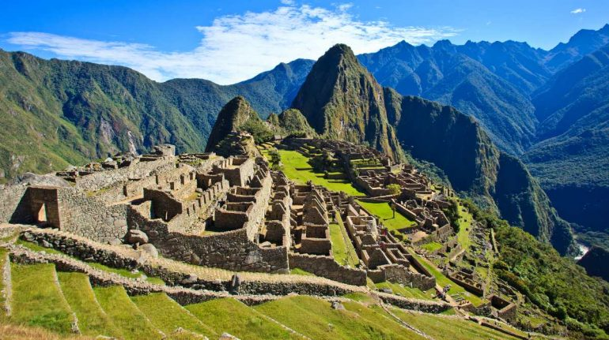

The Prime Economic Award recognizes a business that has made a significant contribution to
local economic
growth. This award celebrates companies that have shown exceptional performance in driving innovation,
creating jobs, and fostering sustainable development in the community.
Worldwide chamber competition
BizConnect Chamber is proud to participate in the
Worldwide Chamber
Competition, where the best
chambers
globally compete to showcase their achievements in fostering business growth, innovation, and community
development. This event highlights BizConnect’s ongoing commitment to excellence.
Lima, the vibrant capital of Peru, is known for its rich colonial history, coastal beauty, and
bustling urban life. Nestled between the Pacific Ocean and the foothills of the Andes, the city boasts
stunning views, a world-renowned food scene, and iconic landmarks like the Plaza Mayor and the Huaca
Pucllana
ruins.The Lima Chamber of Commerce, established in 1888, is one of Peru's most influential business
organizations. It serves as a hub for promoting economic growth, supporting local and international
businesses, and fostering innovation in trade and commerce. With a strong commitment to professional
development, advocacy, and networking, the Chamber plays a vital role in shaping the business landscape of
Lima and Peru at large.The Diablada is a vibrant and theatrical traditional dance from Peru, most famously performed
during the Virgen de la Candelaria festival in Puno. Known as the 'Dance of the Devils,' it features
colorful costumes with elaborate devil masks, symbolizing the battle between good and evil. With energetic
choreography and deep religious and cultural significance, the Diablada is a powerful expression of Andean
heritage, blending indigenous and colonial influences.

Machu Picchu, the ancient Incan citadel nestled high in the Andes Mountains of Peru, is one of the
most iconic archaeological sites in the world. Built in the 15th century and hidden from outsiders until its
rediscovery in 1911, this UNESCO World Heritage Site showcases stunning stone architecture, terraced fields,
and breathtaking views of the surrounding valleys and peaks. A symbol of the Incan Empire's ingenuity, Machu
Picchu remains a must-see destination for history enthusiasts and nature lovers alike.San Isidro, a prestigious district in Lima, Peru, is a key driver of the nation's economy. As the
country's financial and business center, it is home to major banks, multinational corporations, and
embassies. The district combines modern skyscrapers with historical sites and lush parks like the Bosque El
Olivar. San Isidro plays a pivotal role in shaping Peru’s economic landscape, attracting both local and
international investment, making it a dynamic hub for commerce and innovation.